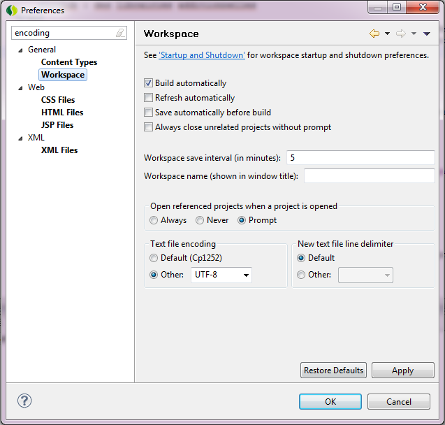
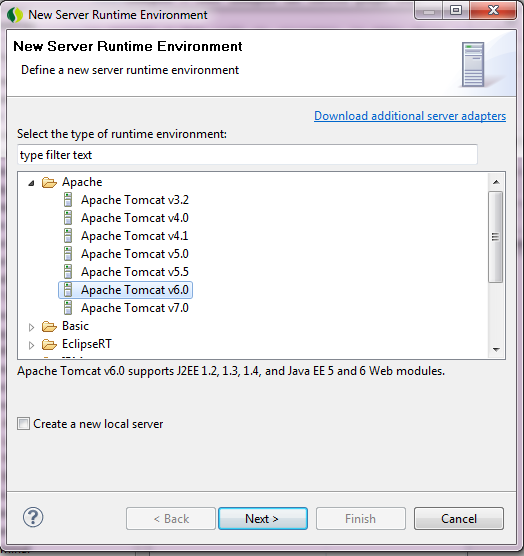
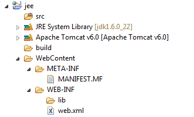
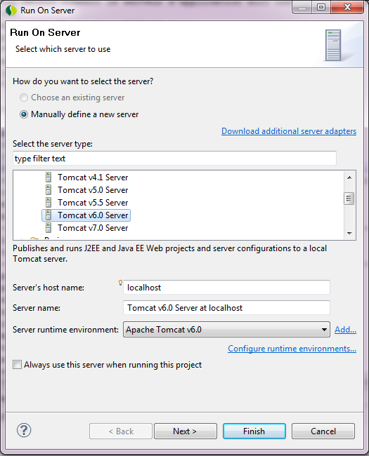
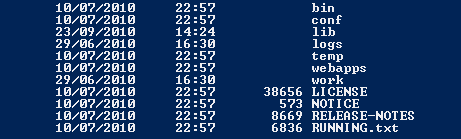
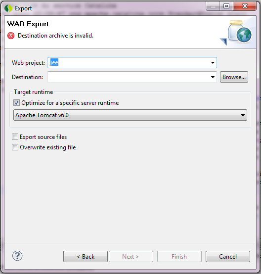
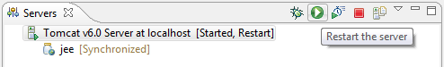
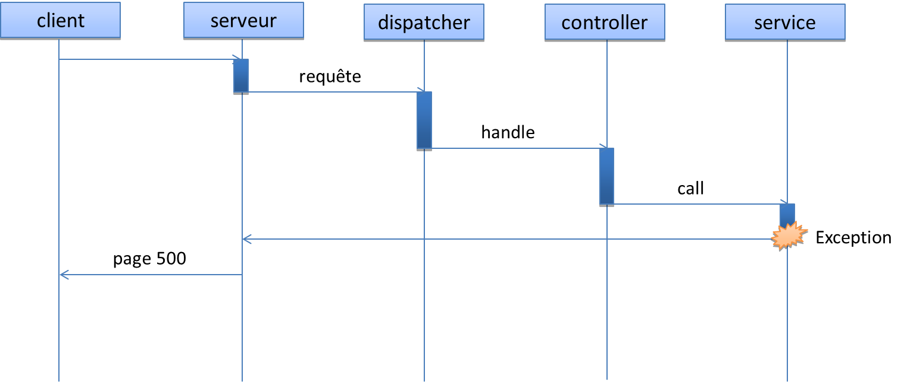

Application web jee
Présentation
Nous allons utiliser ce template de projet afin de se familiariser avec les servlets et les fichiers jsp.
Les outils utilsés :
- eclipse : un IDE gratuit pour java (et beaucoup d'autres langages)
- tomcat : un conteneur de servlet de la fondation apache
Pour eclipse, si possible, prendre la distribution SpringSource Tool Suite
Il faut installer tomcat 6 où l'on souhaite. Un jdk 6 est requis.
Les ressources disponibles pour ce projet :
- eclipse : le répertoire contenant le projet eclipse
- index.html : ce fichier
- images : les images de cette page web
- lib : des librairies additionnelles
Le projet a été créé en utilisant le menu File > New... > Dynamic Web Project (nom : jee)
Encodings sous eclipse : eclipse est un outils multi plateformes et multi languages dont la configuration par défaut est parfois inadéquate.
Ce menu est accessible via Window > Preferences
Il permet de régler l'encoding par défaut et aussi l'encoding par type de fichier.
C'est l'endroit où regarder en cas de problème d'encoding.
Il est possible enfin de régler l'encoding fichier par fichier.
La mise en place du projet
- Ouvrir eclipse
- Si tomcat n'est pas configuré, ajouter tomcat 6 à la liste des serveurs disponibles :
- Windows > Preferences
- puis Server > Runtime Environments
- Add...
- 
- Choisir le répertoire d'installation de tomcat 6
- Finish
- Ok
- Démarrer avec le projet eclipse
- Importer le projet eclipse (File > Import > Existing project into workspace)
- Ou en créer un (File > New... > Dynamic Web Project)
Le projet eclipse
Sous eclipse, le projet ressemble à l'arborescence suivante
- src : les classes java
- JRE System Library : les librairies du jre
- Apache Tomcat v6.0 : les librairies de tomcat
- build : le répertoire où sont compilés les classes
- WebContent : les ressources web
- WebContent/META-INF : les méta données liées au projet
- WebContent/WEB-INF : les méta données web liées au projet
- WebContent/WEB-INF/lib : les librairies utilisateur
- WebContent/WEB-INF/web.xml : le descripteur de déploiement
Le descripeur de déploiement
Il décrit comment le serveur d'application doit configurer et déployer les composants.
<?xml version="1.0" encoding="UTF-8" ?> <web-app xmlns="http://java.sun.com/xml/ns/javaee" xmlns:xsi="http://www.w3.org/2001/XMLSchema-instance" xsi:schemaLocation="http://java.sun.com/xml/ns/javaee http://java.sun.com/xml/ns/javaee/web-app_2_5.xsd" version="2.5"> <display-name>jee</display-name> </web-app>
Pour le moment, notre application ne fait que s'appeler jee
Lancement du serveur web
On peut lancer le conteneur tomcat avec le menu Run > Run as... > Run on Server.
Ce menu est également accessible en menu contextuel (click droit) sur le projet.
Un click sur Finish et le serveur démarre.
Normalement une page 404 sur http://localhost:8080/jee devrait désormais répondre.
Le nom jee à la fin de l'url est le nom de l'application. Il peut différer si le projet eclipse initial (et donc le nom de l'application dans le web.xml) n'est pas jee.
Lancement de tomcat en ligne de commande
Le lancement de tomcat via eclipse est pratique car il permet de le piloter sans quitter l'IDE.
En production et même en local, il est possible de lancer le serveur tomcat en ligne de commande et de déployer le war manuellement.
Pour lancer tomcat, il suffit d'aller dans le répertoire bin de l'installation.
La commande de lancement est startup.sh ou startup.bat selon l'environnement.
La commande d'arrêt est shutdown.sh ou shutdown.bat selon l'environnement.
Un fois démarré, il suffit de déposer le war dans le répertoire webapps de l'installation.
Avec eclipse, un war se crée facilement à partir d'un projet web via File > Export... (war)
Une fois le war déposé, tomcat devrait indiquer qu'il a vu et déployer l'application.
On peut d'ailleurs voir dans le répertoire webapps, un répertoire correspondant à l'application.
Il existe un nom de war spécial sous tomcat. Si l'application est déposée en tant que ROOT.war, elle sera déployé à la racine du serveur (http://localhost:8080/).
En pratique, on utilise jamais eclipse pour faire un war en entreprise.
On utilise un outils de build comment ant ou maven qui permet de rendre cette contruction automatisable et fiable.
HelloWorldServlet
Nous allons utiliser eclipse afin de créer une servlet (File > New > Servlet) : HelloWorldServlet.
Les options à choisir lors de la création de la classe :
- java package : fr.prez.jee
- class name : HelloWorldServlet
- method stubs : doGet
A la fin du wizard, on obtient la classe suivante :
public class HelloWorldServlet extends HttpServlet {
private static final long serialVersionUID = 1L;
@Override
protected void doGet(HttpServletRequest request, HttpServletResponse response)
throws ServletException, IOException {}
}
Demandons à la classe de dire bonjour :
protected void doGet(HttpServletRequest request, HttpServletResponse response)
throws ServletException, IOException {
response.getWriter().write("Hello !");
}
Si on jette un oeil au web.xml, eclipse a rajouté ce composant pour nous
<?xml version="1.0" encoding="UTF-8"?>
<web-app ...>
<display-name>jee sleleton</display-name>
<servlet>
<description></description>
<display-name>HelloWorldServlet</display-name>
<servlet-name>HelloWorldServlet</servlet-name>
<servlet-class>fr.prez.jee.HelloWorldServlet</servlet-class>
</servlet>
<servlet-mapping>
<servlet-name>HelloWorldServlet</servlet-name>
<url-pattern>/HelloWorldServlet</url-pattern>
</servlet-mapping>
</web-app>
Il suffit alors de demander a tomcat de recharger l'application.
Note servlet répond sur http://localhost:8080/jee/HelloWorldServlet.
Les paramètres
Il est possible d'exploiter les paramètres depuis la servlet.
public class HelloWorldSerlvet extends HttpServlet {
private static final long serialVersionUID = 1L;
@Override
protected void doGet(HttpServletRequest request,
HttpServletResponse response)
throws ServletException, IOException {
String name = request.getParameter("name");
response.getWriter().write("Hello " + name + " !");
}
}
Ce qui donne en résultat sur http://localhost:8080/jee/HelloWorldServlet?name=Steven.
Le redirect
Création de HelloWorldRedirectServlet qui va faire un redirect vers HelloWorldSerlvet
public class HelloWorldRedirectServlet extends HttpServlet {
@Override
protected void doGet(HttpServletRequest request,
HttpServletResponse response)
throws ServletException, IOException {
response.sendRedirect("HelloWorldServlet");
}
}
Ce qui donne en résultat sur http://localhost:8080/jee/HelloWorldRedirectServlet?name=Steven.
On peut voir le premier retour du serveur (302) sur le traceur de requête de Chrome.
On note aussi que le paramètre name est perdu dans la redirection.
Les sessions
Création de HelloWorldSessionServlet afin de stoquer le nom en session.
public class HelloWorldSessionServlet extends HttpServlet {
@Override
protected void doGet(...) ... {
String name = request.getParameter("name");
request.getSession(true).setAttribute("name", name);
response.getWriter().write("Stored " + name + " !");
}
}
La nouvelle servlet http://localhost:8080/jee/HelloWorldSessionServlet?name=Steven.
Modifions notre première servlet afin qu'elle en profite
public class HelloWorldSerlvet extends HttpServlet {
@Override
protected void doGet(...) ... {
String name = request.getParameter("name");
if (name == null) {
name = (String) request.getSession(true).getAttribute("name");
}
response.getWriter().write("Hello " + name + " !");
}
}
Notre première servlet supporte l'absence de paramètre http://localhost:8080/jee/HelloWorldServlet si la variable est en session.
Générer du HTML
Il est possible de faire du html depuis une servlet.
public class HelloWorldSerlvet extends HttpServlet {
@Override
protected void doGet(...) ... {
PrintWriter writer = response.getWriter();
writer.write("<html><head></head><body>Hello !</body></html>");
}
}
Le résultat sur http://localhost:8080/jee/HelloWorldServlet.
Sous chrome, on peut bien observer l'arbre DOM

Mais cette méthode est complètement inadaptée dès que la page web dépasse quelques lignes.
Les fichiers jsp
La création du rendu HTML est le rôle des fichiers jsp. La servlet passe donc la main à une jsp.
public class HelloWorldSerlvet extends HttpServlet {
@Override
protected void doGet(...) ... {
request.setAttribute("name", request.getParameter("name"));
request.getRequestDispatcher("/WEB-INF/jsp/hello.jsp")
.forward(request, response);
}
}
Il faut créer le fichier WebContent/WEB-INF/jsp/hello.jsp (File > New > JSP File) :
<%@ page language="java" contentType="text/html; charset=UTF-8"
pageEncoding="UTF-8"%>
<!DOCTYPE html PUBLIC "-//W3C//DTD HTML 4.01 Transitional//EN"
"http://www.w3.org/TR/html4/loose.dtd">
<html>
<head></head>
<body>Hello ${name} !</body>
</html>
Le résultat sur http://localhost:8080/jee/HelloWorldServlet?name=Steven.
Les tag files
Les tags sont des nouveaux éléments du language des jsp que l'on peut définir soit même.
On ajoute le fichier hello.tag dans le répertoire WEB-INF/tags/widget.
<%@ tag language="java" pageEncoding="UTF-8"%>
<%@ attribute name="name" description="Name to display" required="true"
type="java.lang.String" %>
Hello ${name} ! from tag
Ce qui nous autorise à faire l'appel suivant dans notre jsp.
<%@ page language="java" contentType="text/html; charset=UTF-8"
pageEncoding="UTF-8"%>
<%@ taglib tagdir="/WEB-INF/tags/widget" prefix="widget" %>
<!DOCTYPE html PUBLIC "-//W3C//DTD HTML 4.01 Transitional//EN"
"http://www.w3.org/TR/html4/loose.dtd">
<html>
<head></head>
<body><widget:hello name="${name}" /></body>
</html>
Cela donne donc des nouveaux éléments du language jsp prochent du language html.
Il est aussi possible de déclarer ses tags files en utilisant une synthaxe xml.
Les custom tags
Les tag files sont parfaits afin d'écrire du code jsp réutilisable.
Dans d'autres cas, le code à réutiliser contient davantage de logique que de html et coder en jsp deviennent malaisé.
Les custom tags sont un peu plus compliqués à mettre en place mais ils sont écrit en java.
On ajout le fichier test.tld dans WEB-INF/tld.
<?xml version="1.0" encoding="UTF-8" ?>
<taglib xmlns="http://java.sun.com/xml/ns/j2ee"
xmlns:xsi="http://www.w3.org/2001/XMLSchema-instance"
xsi:schemaLocation="http://java.sun.com/xml/ns/j2ee
web-jsptaglibrary_2_0.xsd" version="2.0">
<tlibversion>1.0</tlibversion>
<jspversion>2.0</jspversion>
<shortname>link</shortname>
<uri>http://fr.prez.jee/test</uri>
<info>Test taglib</info>
<tag>
<name>hello</name>
<tagclass>fr.prez.jee.HelloTag</tagclass>
<body-content>empty</body-content>
<info>Prints name</info>
<attribute>
<name>name</name>
<required>true</required>
<rtexprvalue>true</rtexprvalue>
</attribute>
</tag>
</taglib>
Ensuite on ajoute la clase HelloTag.
public class HelloTag extends SimpleTagSupport {
private String name;
@Override
public void doTag() throws JspException, IOException {
getJspContext().getOut().print("Hello " + name + " from custom tag");
}
public void setName(String name) {
this.name = name;
}
}
Enfin on peut modifier notre fichier jsp.
<%@ page language="java" contentType="text/html; charset=UTF-8"
pageEncoding="UTF-8"%>
<%@ taglib tagdir="/WEB-INF/tags/widget" prefix="widget" %>
<%@ taglib uri="http://fr.prez.jee/test" prefix="test" %>
<!DOCTYPE html PUBLIC "-//W3C//DTD HTML 4.01 Transitional//EN"
"http://www.w3.org/TR/html4/loose.dtd">
<html>
<head></head>
<body>
<widget:hello name="${name}" /><br>
<test:hello name="${name}" />
</body>
</html>
Custom tags et tag files sont solutions complémentaires.
Les fichiers tld et les custom tags peuvent être facilement intégrés à des jar et donc être réutilisables entre plusieurs projets.
La gestion d'erreur
Le traitement d'un requête peut impliquer un nombre important d'objets et une erreur peut survenir à n'importe quel stade du traitement.
Par défaut, il est donc intéressant d'avoir un mécanisme générique, une sorte de filet, qui récupère toutes ces erreurs et produit un resultat pour le client.
Actuellement, si on génère une erreur, on obtient la page d'erreur par défaut.
public class HelloWorldSerlvet extends HttpServlet {
@Override
protected void doGet(...) ... {
throw new NullPointerException("ups !");
}
}
Le résultat est assez sec http://localhost:8080/jee/HelloWorldServlet
Une configuration simple du web.xml permet de traiter ce genre d'erreur.
<error-page> <error-code>500</error-code> <location>/WEB-INF/jsp/500.jsp</location> </error-page>
Et la jsp WEB-INF/jsp/500.jsp correspondant.
<%@ page language="java" contentType="text/html; charset=UTF-8"
pageEncoding="UTF-8"%>
<!DOCTYPE html PUBLIC "-//W3C//DTD HTML 4.01 Transitional//EN"
"http://www.w3.org/TR/html4/loose.dtd">
<html>
<head></head>
<body>Erreur 500</body>
</html>
Ce qui permettrait de produire une réponse mise en forme sur http://localhost:8080/jee/HelloWorldServlet
Les filtres
Les filtres sont des composants qui interceptent les requêtes
Nous créons le filtre suivant GuardFilter (File > New... > Filter)
public void doFilter(ServletRequest request, ServletResponse response,
FilterChain chain) throws IOException, ServletException {
try {
chain.doFilter(request, response);
} catch (Exception e) {
response.getWriter().write("got you !");
}
}
En prenant soin de modifier le web.xml.
<filter> <display-name>GuardFilter</display-name> <filter-name>GuardFilter</filter-name> <filter-class>fr.prez.jee.GuardFilter</filter-class> </filter> <filter-mapping> <filter-name>GuardFilter</filter-name> <url-pattern>/*</url-pattern> </filter-mapping>
Sur la requête http://localhost:8080/jee/HelloWorldServlet, le filtre a intercepté l'erreur et répondu.
Les filtres sont très pratiques afin d'implémenter des problématiques transverses telles que la sécurité ou la libération de ressources.
Un cas concret
javamelody est une librairie qui s'intègre à une application et permet de la monitorer.
Il suffit de recopier les jars présents dans le répertoire lib vers le répertoire WEB-INF/lib et de changer le web.xml.
Si on copie un fichier via sur le filesystem d'un projet en dehors d'eclipse, il faut demander au projet se rafraîchir (File > Refresh) afin que le fichier soit pris en compte.
<filter> <filter-name>monitoring</filter-name> <filter-class>net.bull.javamelody.MonitoringFilter</filter-class> </filter> <filter-mapping> <filter-name>monitoring</filter-name> <url-pattern>/*</url-pattern> </filter-mapping> <listener> <listener-class>net.bull.javamelody.SessionListener</listener-class> </listener>
Javamelody analyse tout ce qui se passe dans le serveur et est capable de fournir énormément d'information sur l'application.
Après quelques requêtes, on peut lire un rapport sur http://localhost:8080/jee/monitoring.
Dans notre cas, nous avons peu de composants. Dans une application réelle, javamelody fournit des informations sur tous les services standards et les librairies les plus utilisées.